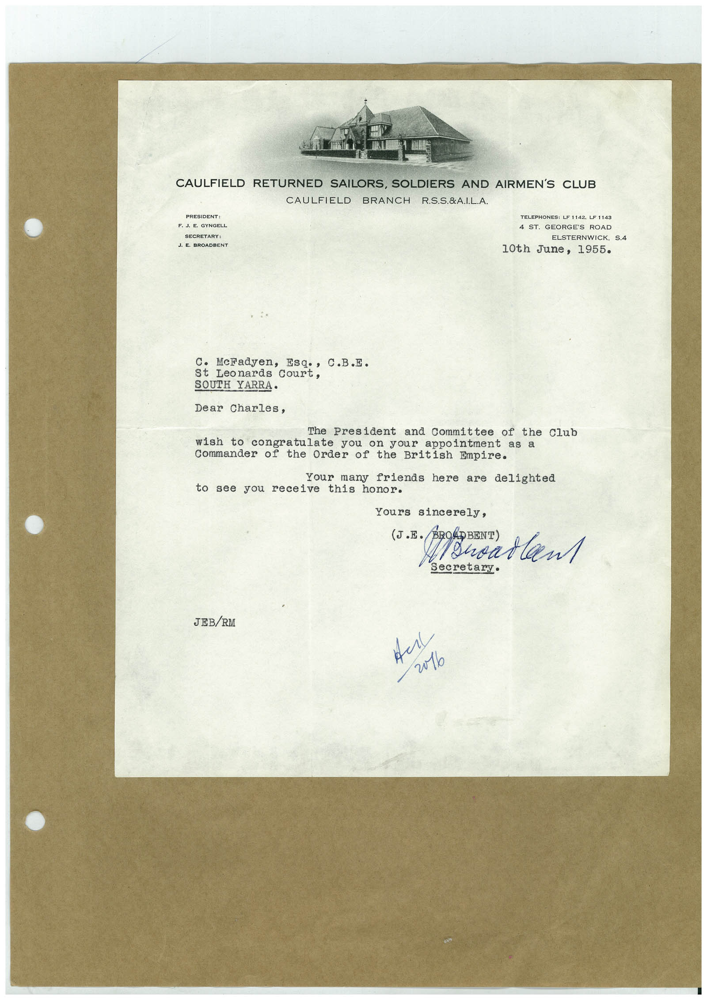

Book 1 · scan 098


Description
Transcription
Context
Review notes
Compare the machine draft with the scan. Handwriting and names need human review.
Artifacts
Edit the artifacts field in this note’s frontmatter to change these records. This summary is generated.
B01-S098-A01 — Letter — Book 1, scan 098
Types: Typed document, Letter
Scope: Whole scanned page; individual items can be split out during review.
Caption: Not mapped yet.
Caption source: Not recorded yet.
Caption status: unmapped
Machine transcription
CAULFIELD RETURNED SAILORS, SOLDIERS AND AIRMEN'S CLUB CAULFIELD BRANCH R.S.S.&A.I.L.A. PRESIDENT: F. J. E. GYNGELL SECREIANT: J. E. BROADBENT TELEPHONES: LF 1142, LF 1143 4 ST. GEORGE'S ROAD ELSTERNWICK, S.4 10th June, 1955. C• McFadyen, Esq., C.B.E. St Leonards Court, SOUTH YARRA. Dear Charles, The President and Committee of the Club wish to congratulate you on your appointment as a Commander of the Order of the British Empire. Your many friends here are delighted to see you receive this honor. Yours sincerely, (J.E. BOADBENT) / Shoarlan Secretary• JEB/RM v0lo